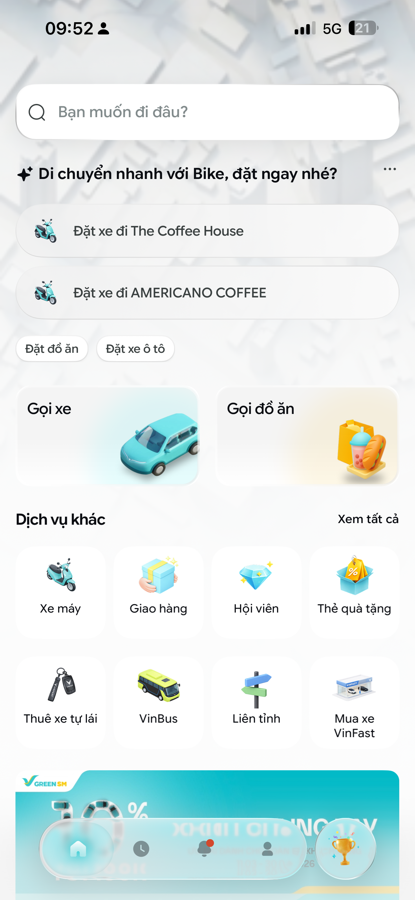
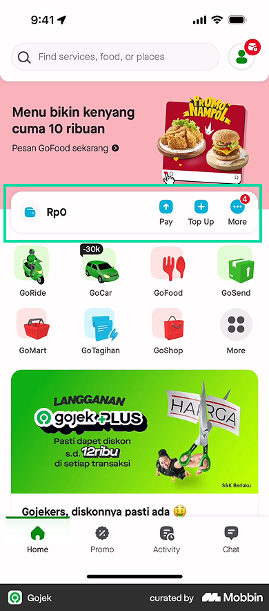
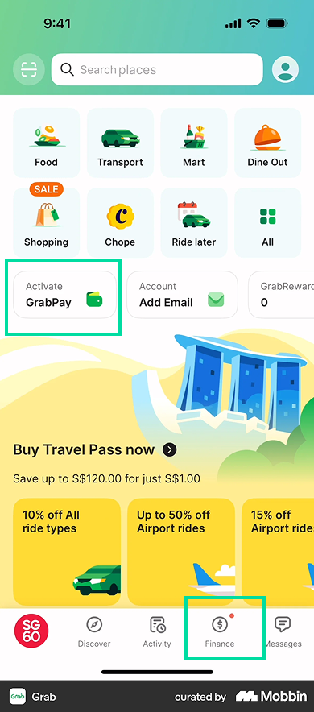
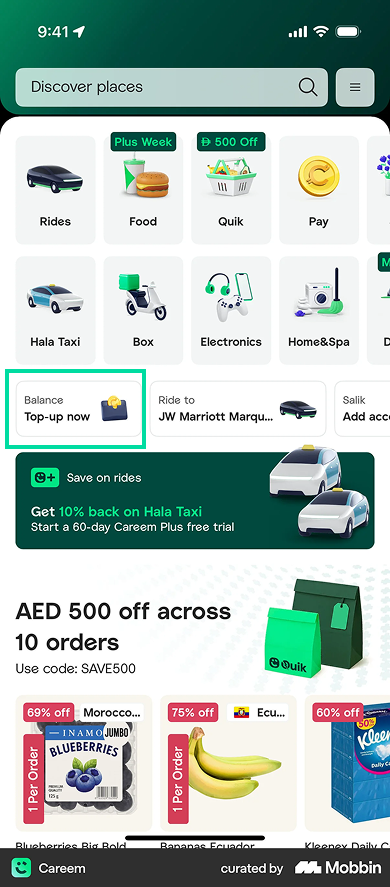

Tác giả: Huy Kiều · Ngày: 29/04/2026
Đối tượng đọc: Product team VSP × XanhSM
Slide V-Smart Pay × GSM của Product đã chốt việc tích hợp ví VSP vào XanhSM. Service tree, onboarding flow và 10 state cho các flow phụ đã có. Phần còn thiếu là điểm đáp xuống của ví trên home XanhSM — và đó là điểm quyết định adoption rate trong 90 ngày đầu launch.

Home XanhSM hôm nay đã chật: search, khối AI gợi ý, hero "Gọi xe / Gọi đồ ăn", lưới 8 service, banner GreenSM. Entrypoint thanh toán đang nằm sâu trong Profile, ẩn dưới Green Race — depth 3 tap. Khi launch ví VSP, depth này sẽ giết retention loop. Ví không phải một service thêm vào lưới — ví là infrastructure thanh toán.
| As a XanhSM user thường xuyên đặt xe | tôi muốn thấy số dư ví ngay khi mở app, để biết mình thanh toán bằng ví được hay phải dùng tiền mặt — không phải đào 3 tap qua Profile. |
|---|---|
| As a XanhSM user mới (chưa có ví VSP) | tôi muốn thấy lý do đủ rõ và phần thưởng đủ cụ thể, để bỏ công đi qua eKYC + link ngân hàng — thay vì bỏ qua việc setup. |
| As a Product team | chúng tôi muốn entrypoint có state khớp 1-1 với onboarding flow đã chốt, để không phải redesign flow và launch trong 1–2 sprint. |
| As a Design team | chúng tôi muốn entrypoint không đụng các yếu tố khác biệt của XanhSM, để giữ DNA "đi xe" và không phá visual taste hiện có. |
| App | UI | Vị trí entrypoint | Hình thức | Hiện số dư? | Quick action | Surface phụ |
|---|---|---|---|---|---|---|
| Gojek 2026 |  |
Top fold, ngay dưới search | Card full-width | ✅ luôn | Pay · Top Up · More | — |
| Grab |  |
Sau lưới service | Shortcut row 3 ô (conditional) | ❌ trên home | Activate (chưa) — nhảy sang tab Finance (đã) | Tab Finance trong bottom nav |
| Careem (Top up shortcut) |  |
Sau lưới service | Shortcut row 3 ô | ✅ compact (label "Balance") | Top up now | — |
Mỗi cách đặt ví là một pattern UI ngắm vào một khoảnh khắc cụ thể trong hành trình của user. Vẽ ra hành trình đó để thấy ai đang đánh ở đâu:
| ①Awareness Nhận biết |
②Activation Kích hoạt |
③First Use Dùng lần đầu |
④Habit Loop Thói quen |
|
|---|---|---|---|---|
| Phễu user | 100% |
~40% |
~20% |
~10% |
| User nghĩ gì | "Cái gì mới — có liên quan tôi không?" | "Đáng bỏ công làm không?" | "Mở khoá rồi thì dùng sao?" | "Đó là tiền của tôi" |
| Khoảnh khắc | Lướt qua lưới service trên home | Khi nhìn thấy ưu đãi hoặc cần thanh toán | Ngay sau khi activate, balance còn 0 | Mỗi lần mở app, đặc biệt khi balance thấp |
| Cảm xúc | 🤔 Tò mò | 🤨 Phân vân | 😊 Hứng thú | 😌 Phản xạ |
| Động lực | Discovery thụ động — chưa cần lý do mạnh | Tiền — claim cây xanh đổi ra 50.000₫ vào ví VSP | Có sẵn balance từ phần thưởng activate, dùng cho cuốc xe đầu tiên | Tiện — không cần ATM, không phải nhập lại thẻ |
| UI Pattern | Service tile trong lưới — 1 ô ngang hàng các service khác | Onboarding banner — full-width banner có CTA và reward rõ ràng | Wallet hub full-width — show balance và 3 quick action (Nạp / QR / Chuyển) | Top-up shortcut tag — row compact có balance + nút "Nạp tiền" |
| Tham khảo | Careem | Grab | Gojek | Careem (variant) |
Không có pattern tốt nhất. Chỉ có pattern phù hợp với giai đoạn. Đặt Wallet hub của Gojek cho user đang ở Awareness sẽ tạo card trống — vô nghĩa và chiếm chỗ. Đặt Service tile của Careem cho user đã thành thói quen sẽ bắt họ tốn tap để xem balance.
Ngày launch ví VSP, đa số user XanhSM sẽ ở stage Aware → Activate. Đây là điều kiện đầu vào quyết định pattern chọn.
Đặt ví VSP ngay dưới khối AI gợi ý, trên hero card "Gọi xe / Gọi đồ ăn". Vị trí này chiếm prime real estate (zone 2 — chỉ sau search) nhưng không đụng AI prompt vốn là điểm khác biệt của XanhSM, cũng không thay thế hero hay lưới service hiện có.
Quan trọng hơn vị trí là cách entrypoint thay đổi theo state user — cùng một component, render khác nhau theo việc user đã đi đến bước nào trong onboarding flow Product đã chốt. Mỗi state nhắm vào một tâm lý khác nhau trong phễu.
Phần lớn user trong tháng đầu sẽ ở state này. Entrypoint hiển thị như một lời mời: "Liên kết ví VSP — nhận 50.000₫", kèm câu phụ giải thích lợi ích ("Thanh toán nhanh hơn cho mọi cuốc xe") và nút "Liên kết →".
Pattern này lấy từ Grab activate row, đặt cao hơn vì XanhSM cần đẩy adoption nhanh — và kích hoạt 2 tâm lý: completion bias (làm cho xong task này) và incentive (50.000₫ là phần thưởng cụ thể).
Nếu user đã link nhưng chưa eKYC, message đổi thành "Hoàn tất xác minh để dùng đầy đủ". Đã eKYC nhưng chưa link bank: "Liên kết ngân hàng để nạp tiền". Mỗi step trong onboarding flow có message khớp — vẫn cùng vị trí, cùng affordance.
Đây là điều Gojek dạy: một component, nhiều state, không bao giờ trống.
Khi user hoàn tất, entrypoint biến thành Wallet Hub — hiển thị balance, kèm 3 nút: Nạp tiền · Quét QR · Chuyển tiền. Ba nút khớp với ba use case trong slide Product (Top up Green e-Card, Service payment, Transfer) và là 3 feature core của GrabPay.
Khi balance thấp dưới 50.000₫, "Nạp tiền" được nhấn mạnh thành primary action — kích hoạt loss aversion và đẩy user top up trước khi đặt xe.
Một, nó tôn trọng thực tế phễu adoption. Ngày 1 không thể có Wallet Hub trống — phải bắt đầu bằng nudge, evolve dần lên hub. Hai, state machine của entrypoint khớp 1-1 với Onboarding flow Product đã chốt, không cần redesign flow. Ba, nó không đụng ba thứ khác biệt của XanhSM: AI prompt, lưới service VinFast, bottom nav có Trophy.